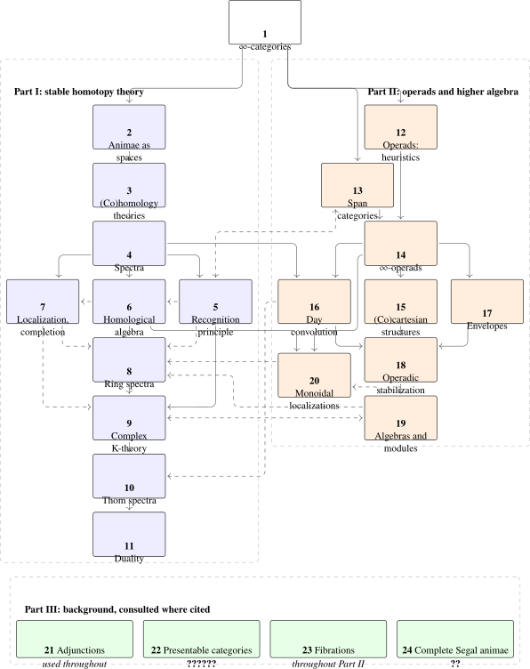

This book aims to provide an accessible introduction to the field of stable homotopy theory using the language of \(\infty \)-categories. Our primary goal is to develop the technical foundations of the subject, including stability and the \(\infty \)-category of spectra, the theory of \(\infty \)-operads, and some basic theory of ring spectra.
Historical overview
To put into perspective the modern viewpoint on stable homotopy theory, let us take a step back and consider some of the historical developments leading up to it.
In 19th-century topology, mathematicians like Bernhard Riemann, Enrico Betti and Henri Poincaré worked on a classification of manifolds by assigning numerical invariants to them, like the Betti numbers and torsion coefficients. Emmy Noether observed in 1925 that these numbers correspond to the rank and torsion parts of some finitely generated abelian group. This caused a shift in perspective where the homology groups themselves were regarded as the fundamental invariant of a space, and culminated in a full axiomatization of (co)homology in 1945 by Samuel Eilenberg and Norman Steenrod.
One of the central axioms in the axiomatization of homology is the stability axiom, which demands that the homology of a space \(X\) agrees, up to a degree shift, with that of its suspension \(\Sigma X\). The key motivation for the notion of stability was the Freudenthal suspension theorem, proved around the year 1937 by Hans Freudenthal [Freudenthal (1937)]. It states that if the first \(n\) homotopy groups of some pointed CW complex \(X\) are trivial, then the canonical comparison map \(X \to \Omega \Sigma X\) induces an isomorphism on \(\pi _k\) for \(k \leq 2n\) and a surjection for \(k = 2n+1\). Repeating this for \(\Sigma X\), \(\Sigma ^2X\), etcetera, one finds that the sequence of abelian groups1 \[ \pi _k(X) \to \pi _{k}(\Omega \Sigma X) \to \pi _k(\Omega ^2 \Sigma ^2 X) \to \, \ldots \] eventually stabilizes for every \(k \geq 0\). Its colimit is called the \(k\)-th stable homotopy group of \(X\), denoted \(\pi _k^{\st }(X)\). In contrast to their unstable analogues, the stable homotopy groups form a generalized homology theory, satisfying all the Eilenberg-Steenrod axioms except for the dimension axiom. Other generalized (co)homology theories discovered in the late 50’s were cobordism theory by René Thom [Thom (1954)], classifying manifolds with given tangential structures, and topological K-theory by Atiyah and Hirzebruch [Atiyah and Hirzebruch (1959)], classifying vector bundles over a space.
The success of homology theory in topology inspired mathematicians to develop analogous theories in other fields, leading for example to the theories of group cohomology, Lie algebra cohomology, and sheaf cohomology. An elegant cohesive framework for these developments was established by Henri Cartan and Samuel Eilenberg in 1956 in their monumental book Homological Algebra. Their work created a new field of mathematics, providing a powerful, abstract language that unified the various existing theories. The core technical innovation that achieved this was the definition of a derived functor, which in the case of the tensor product and the hom-functor results in \(\Tor \)-groups and \(\Ext \)-groups, respectively. Indeed, many previously ad-hoc cohomology theories could now be neatly phrased as specific instances of \(\Ext \)-groups.
Independent of these advances in (co)homology theory, Spanier and Whitehead introduced the set of stable maps between two pointed CW-complexes \(X\) and \(Y\): \[ [X,Y]^{\st }_* \quad := \quad \colim _n [\Sigma ^nX, \Sigma ^n Y]_*. \] Finite pointed CW-complexes and stable maps assemble into a category known as the Spanier-Whitehead category [Spanier and Whitehead (1953)], which they used to investigate duality phenomena of spaces. Building on their work, Spanier’s student Lima [Lima (1959)] introduced the first definition of a spectrum, and used it to prove a version of Spanier-Whitehead duality for a more general class of spaces. Other definitions for spectra were consequently proposed by Spanier, Kan, and Whitehead, but it was Boardman who gave the first satisfying definition of the homotopy category of spectra, with a clear published account presented by Adams [Adams (1974)]. It is the definition still used today:2
Definition. A spectrum \(X\) is a sequence of pointed spaces \(\{X_n\}_{n \geq 0}\) equipped with homotopy equivalences \(X_n \simeq \Omega X_{n+1}\), where \(\Omega (-)\) denotes the loop space; if in addition \(\pi _k(X_n) = 0\) for \(k < n\), we say that \(X\) is connective.
Some key features of the homotopy category of spectra were that it contained the Spanier-Whitehead category as a full subcategory, that it represented all cohomology theories via Brown’s representability theorem, and that it admitted a commutative smash product. It allowed for calculational tools for computing stable homotopy groups, like the Adams spectral sequence [Adams (1958)], Bousfield’s localizations at homology theories [Bousfield (1979)], and the development of chromatic homotopy theory [Ravenel (1984); Ravenel (1992)].
The years that followed saw a surge in the study of ‘brave new algebra’ [May (1977)], i.e. the importing of statements from algebra into stable homotopy theory. The key technical ingredients that made this possible were the theory of operads by May [May (1972)] and Boardman–Vogt [Boardman and Vogt (1973)], and the development of point-set models for the stable homotopy category [Lewis et al. (1986); Elmendorf et al. (1997); Hovey et al. (2000)]. Most of the familiar algebraic constructions on abelian groups have direct homotopical analogues for spectra:
- There is a direct sum \(X \oplus Y\) of two spectra, which is simultaneously a product and a coproduct;
- There is a tensor product \(X \otimes Y\) of two spectra. This leads to the notion of a ring spectrum: a spectrum \(R\) equipped with a multiplication operation \(m\colon R \otimes R \to R\) that is ‘coherently’ associative and unital;
- There is a notion of a module over a ring spectrum. Familiar notions for modules over (commutative) rings, like the properties of being projective, perfect, or flat, admit generalizations to the setting of ring spectra;
- Given a spectrum \(X\) and a prime \(p\), we may form its \(p\)-localization \(X_{(p)}\) and its \(p\)-completion \(X^{\wedge }_p\), which have similar behavior as their analogues for abelian groups;
- And so on and so forth...
The main difference between these constructions and their classical counterparts is that they do not need to be derived anymore. For example, unlike the tensor product of abelian groups, the tensor product of spectra is already exact in both variables. In this way, we may think of stable homotopy theory as the ultimate realization of Cartan and Eilenberg’s vision: a setting where derived functors become primary objects of study rather than secondary constructions measuring the failure of exactness. It is for precisely this reason that the techniques and concepts from stable homotopy theory have found significant applications in numerous neighboring fields of mathematics, like (derived) algebraic geometry, algebraic K-theory, geometric topology and representation theory.
Higher category theory
To fully appreciate the pervasive role of (stable) homotopy theory in modern mathematics, we must first embrace a new way of thinking about equality:
Fundamental Principle of Homotopy Theory: When expressing that two entities are equal, we must always specify how they are equal by providing a homotopy/isomorphism between them.
This principle is already familiar to most mathematicians when applied to mathematical objects: for instance, when we want to express that two abelian groups \(A\) and \(B\) are ‘the same’, we usually mean that there is an isomorphism \(A \cong B\) between them. In homotopy theory, we extend this principle to morphisms between objects; for example, two continuous maps \(f,g\colon X \to Y\) are considered ‘equal’ when equipped with a homotopy \(f \sim g\) between them. More broadly, in homotopy theory, the notion of ‘sameness’ is not a property (a binary yes/no question) but rather structure that must be explicitly provided (a homotopy, isomorphism, etc.). This shift in perspective originated in algebraic topology, but has by now become fundamental in many neighboring fields of mathematics.
While this principle appears straightforward, it rapidly gives rise to intricate ‘coherence problems’. Consider, for instance, the task of defining a homotopical version of an abelian group \(A\). Following the Fundamental Principle, expressing the associativity of addition \(+\colon A \times A \to A\) requires providing a homotopy between the two maps \(A \times A \times A \to A\) given by \((a,b,c) \mapsto a + (b + c)\) and \((a,b,c) \mapsto (a + b) + c\). Once such a homotopy is given, one can construct two distinct homotopies between the maps \((a,b,c,d) \mapsto a + (b + (c + d))\) and \((a,b,c,d) \mapsto ((a + b) + c) + d\). Requiring these to coincide necessitates the introduction of homotopies between homotopies. This process continues indefinitely, leading to an infinite hierarchy of higher homotopies, as laid out for instance by Stasheff (1963).
The modern solution to such coherence problems lies in the theory of \(\infty \)-categories. Conceptually, an \(\infty \)-category behaves much like a classical 1-category: we may speak of objects and morphisms that can be composed. But in accordance with the Fundamental Principle, it also comes equipped with a notion of homotopies between morphisms, as well as homotopies between these homotopies, and so on ad infinitum. Homotopical versions of familiar categorical constructions are conveniently formulated within this framework: for example, we may define for any \(\infty \)-category \(C\) with finite products a new \(\infty \)-category \(\CGrp (C)\) of commutative groups in \(C\), where all the required higher coherences are automatically built into the objects.
As we will see, there are \(\infty \)-categories \(\Ss \) and \(\Sp \) whose objects are spaces3 and spectra, respectively, and whose ‘higher homotopies’ are the expected ones. The following theorem establishes a crucial relation between these two \(\infty \)-categories:
Recognition Principle for Connective Spectra (Boardman–Vogt, May and Segal). There is a fully faithful functor of \(\infty \)-categories \[ \CGrp (\Ss ) \hookrightarrow \Sp \] whose image consists of the connective spectra.4
In other words, we may think of a connective spectrum as a ‘homotopy coherent’ analogue of an abelian group. This result is part of a much broader phenomenon: many algebraic structures have natural ‘homotopy coherent’ analogues in the world of spectra (think for example of the ring spectra mentioned before).
While coherence problems in homotopy theory can be (and historically have been) handled without \(\infty \)-categories, the \(\infty \)-categorical framework builds the Fundamental Principle into its foundations, so that many homotopy-theoretic concepts admit native formulations. The methods from higher category theory are rapidly becoming a standard tool among researchers, and they are slowly making their way into more and more graduate courses at universities. It thus seems like the time is ripe for an accessible resource that develops the foundations of stable homotopy theory using the language of \(\infty \)-categories. Providing such a resource is the primary objective of this book.
From abelian categories to stable \(\infty \)-categories
With the concept of an \(\infty \)-category at hand, we can now return to the question of what makes stable homotopy theory such a suitable framework for doing homological algebra. The short answer is that it allows for a richer notion of exact sequences, refining the classical notion of short exact sequences in abelian categories. To see what this means, let us start from the classical situation.
To make sense of short exact sequences in a 1-category \(C\), some basic conditions need to be satisfied. First, \(C\) must admit a zero object \(0\), i.e. an object with the property that for any other \(X \in C\) there are unique maps \(X \to 0\) and \(0 \to X\). Second, \(C\) must admit kernels and cokernels. Third, consider two maps \(i\) and \(p\) in \(C\) of the form \[ A \xhookrightarrow {i} B \overset {p}{\twoheadrightarrow } C \] with \(pi = 0\), where \(i\) is a monomorphism, and where \(p\) is an epimorphism. Then it should always be the case that \(A\) is the kernel of \(p\) if and only if \(C\) is the cokernel of \(i\). If these equivalent conditions are satisfied, we say that \(i\) and \(p\) form a short exact sequence.
The story changes a little if the category \(C\) is allowed to be an \(\infty \)-category. In this case, the equality \(pi = 0\) from before should be replaced by a choice of homotopy \(pi \simeq 0\). Following the Fundamental Principle, we must take this choice as part of the data of the exact sequence, and different choices will correspond to different exact sequences. Similarly, we replace the kernel of a map \(g\colon Y \to Z\) by what is called its fiber: the terminal example of an object \(X\) equipped with a map \(f\colon X \to Y\) and a nullhomotopy \(gf \simeq 0\); dually, we replace cokernels by cofibers. These considerations motivate the following central definition in stable homotopy theory:
Definition. An \(\infty \)-category \(C\) is called stable if it has a zero object, if it has fibers and cofibers, and if for every composable pair of maps \(X \xrightarrow {\smash {f}} Y \xrightarrow {\smash {g}} Z\) equipped with a nullhomotopy \(gf \simeq 0\) it holds that \(X\) is the fiber of \(g\) if and only if \(Z\) is the cofiber of \(f\).
We refer to the sequences appearing in the definition as exact sequences. What makes this definition so powerful is that there are no longer any restrictions on the maps \(f\) and \(g\) in an exact sequence, in contrast to the situation for abelian categories where \(i\) needs to be a monomorphism and \(p\) needs to be an epimorphism. Indeed, while the inclusion map \(\ker (p) \hookrightarrow B\) of a kernel in an abelian category is automatically a monomorphism, the structure map \(\fib (g) \to Y\) of a fiber in a stable \(\infty \)-category need not be; indeed, any map \(f\colon X \to Y\) arises this way. As an important consequence, it follows that any functor \(F\colon C \to D\) between stable \(\infty \)-categories is exact as soon as it is either left or right exact. This in particular means that structures like tensor products or internal homs in stable \(\infty \)-categories need no longer be ‘derived’ to turn them into exact functors.
An important example of a stable \(\infty \)-category is the \(\infty \)-category \(\Sp \) of spectra; in fact, it is in some precise sense the universal example. Furthermore, every abelian category \(\Aa \) gives rise to a stable \(\infty \)-category by considering its derived \(\infty \)-category \(\D (\Aa )\), which comes equipped with an inclusion \(\Aa \hookrightarrow \D (\Aa )\) that turns short exact sequences in \(\Aa \) into exact sequences in \(\D (\Aa )\).
As we will explore during the course of this book, most of the usual constructions from homological algebra can be performed directly at the level of stable \(\infty \)-categories, without needing to first perform them at the level of abelian categories and then passing to derived functors. The classical derived functors are then obtained as the homotopy/homology groups of these constructions. For example, every classical commutative ring \(R\) defines a commutative ring spectrum, and for two \(R\)-modules \(M\) and \(N\) the Tor- and Ext-groups between \(M\) and \(N\) may be computed as \[ \Tor _n^R(M,N) \cong \pi _n(M \otimes _R N) \qquadtext { and } \Ext _R^{n}(M,N) \cong \pi _{-n}(\hom _R(M,N)), \] where \(- \otimes _R -\) and \(\hom _R(-,-)\) denote the tensor product and internal hom in the \(\infty \)-category of \(R\)-module spectra.
The theory of \(\infty \)-operads
The higher coherences resulting from the Fundamental Principle do, however, make it considerably more subtle to define and manipulate algebraic structures in the setting of \(\infty \)-categories than in classical algebra. In particular, it is generally not possible to simply write down such structures ‘by hand’; some abstract machinery is necessary to keep track of all these coherences. One of the main examples of such machinery is the formalism of \(\infty \)-operads, developed by Lurie [Lurie (2017)] based on the classical theory of operads by May (1972) and Boardman and Vogt (1973). For this reason, we devote a substantial part of this book to the theory of \(\infty \)-operads, with the aim of providing an accessible introduction to it.
Heuristically, an operad encodes all possible operations associated to a given algebraic structure. For example, there is an operad for commutative rings, which has a single \(n\)-ary operation for every \(n \geq 0\), corresponding to the multiplication map \(R^{\otimes n} \to R, r_1 \otimes \dots \otimes r_n \mapsto \prod _{i=1}^n r_i\). A general operad \(\Oo \) will specify for each \(n \geq 0\) a set \(\mathcal {O}(n)\) of possible \(n\)-ary operations. These operations should come with certain identities and compositions; for example, if we plug an \(n\)-ary operation into one input of a \(k\)-ary operation, this should yield an \((n+k-1)\)-ary operation. We further require this composition law on operations to be associative and unital.
In the \(\infty \)-categorical setting, the analogous concept of \(\infty \)-operad is more subtle to define, as the unitality and associativity of the composition law are now no longer strict but are only satisfied up to coherent higher homotopies. While there are various approaches in the literature for how to deal with these coherences, we will follow Lurie by defining \(\infty \)-operads via their ‘category of operators’. In fact, we will work with a slight variant of Lurie’s definition, in which the category \(\Fin _*\) of finite pointed sets is replaced by the \((2,1)\)-category \(\Span (\Fin )\) of spans of finite sets.
Prerequisites and how to read this book
The main prerequisites are 1-category theory and algebraic topology at the level of a first graduate course. In particular, the reader should be comfortable with limits and colimits, adjoint functors, CW complexes, homotopy groups, and singular homology and cohomology. Some familiarity with chain complexes and vector bundles is useful, but the relevant material is recalled when it first becomes essential. No prior familiarity with \(\infty \)-categories, spectra, operads, model categories, or higher algebra is assumed.
This book is available in a published and an online version. The online version contains supplementary sections, identified by “(online only)” in their titles, and uses color in some explanatory diagrams. The supplementary sections are placed at the ends of chapters, so all material appearing in both versions has the same chapter, section, and theorem numbering. Page numbers, however, differ between the two versions.
The book is not intended to be read strictly from beginning to end. Chapter 1 provides the common foundation for Parts I and II, while Part III collects technical background that may be consulted when it is cited. The main complication is that the first two parts depend on one another. Part I constructs spectra before their coherent tensor product has been developed, so Chapter 8 states the required algebra and module theory as a black box. Part II later constructs this tensor product and proves the algebra and module package, while relying on the theory of spectra from Chapter 4 and, in its application to derived categories, on Chapter 6. The resulting dependencies are summarized in Figure 1.

Here are several possible reading routes:
- (1)
-
For a first course in stable homotopy theory, read Chapter 1 followed by Part I in order, treating the forward references from Chapter 8 to Part II as black boxes. The final three chapters may be selected according to interest.
- (2)
-
For higher algebra, begin with Chapter 1 and then read Part II in order. The construction of the tensor product of spectra in Chapter 16 uses Chapter 4; the application to connective complex K-theory at the end of Chapter 19 uses Chapter 9; and the derived-category application in Chapter 20 uses Chapter 6. These applications may be skipped if the reader is primarily interested in the abstract operadic theory. The relevant chapters of Part III may be consulted when they are first cited.
- (3)
-
For ring spectra and derived algebra, read Part I through Chapter 7, then read Part II through Chapter 20, omitting the application to connective complex K-theory until after Chapter 9. One may then return to Chapter 8 with its higher-algebra input in place.
- (4)
-
For the categorical foundations, read Chapter 1 followed by Part III.
Content
This book is currently still under construction, and will continue to be revised throughout 2025 and 2026; a stable version can be expected in January 2027. It is a combination of my lecture notes for the course Introduction to stable homotopy theory, taught in the winter term 2024/2025, with those for the course Introduction to higher algebra, taught in the summer term 2025.
The material is organized into a foundational chapter followed by three parts. Chapter 1 introduces \(\infty \)-categories and animae; it precedes the parts because both mathematical cores rest on it equally. Part I then develops the foundations of stable homotopy theory: (co)homology theories, spectra and stable \(\infty \)-categories, the recognition principle and homological algebra, followed by the principal examples, namely ring spectra, complex K-theory, Thom spectra and duality. Part II develops the theory of \(\infty \)-operads over \(\Span (\Fin )\) and the higher algebra built on it, including the tensor product of spectra and the theory of algebras and modules that Part I uses. Part III gathers the \(\infty \)-categorical background used throughout: adjunctions, presentable \(\infty \)-categories, cocartesian fibrations and straightening, and complete Segal animae. Each part opens with an introduction describing its chapters in more detail.
Acknowledgments
This book has grown out of two graduate lecture courses on stable homotopy theory and higher algebra taught at the University of Regensburg in 2024/2025. In preparing the manuscript I have benefited from many existing sources on (stable) homotopy theory and higher algebra. I would like to acknowledge some of these influences more explicitly.
The \(\infty \)-categorical approach to stable homotopy theory and higher algebra adopted in this book is deeply indebted to Lurie’s foundational text Higher Algebra [Lurie (2017)], which remains one of the central references in the field. Most of the theory of \(\infty \)-operads developed in Part II ultimately goes back to this work, even when the order of exposition or the proofs differ from Lurie’s treatment. The exposition in Part I is strongly influenced by the lecture notes of Denis Nardin, Introduction to stable homotopy theory [Nardin (2021)], in particular in the choice and ordering of topics. For Part II, I have benefited from Haugseng’s introductory note on \(\infty \)-operads [Haugseng (2023)], and from Gepner’s survey article on higher algebra [Gepner (2020)]. The brief historical sketch of stable homotopy theory in the introduction draws on the accounts of May and Weibel [May (1999); Weibel (1999)]. Classical developments of the theory of spectra that have shaped my background, and from which I have borrowed a number of examples and perspectives, may be found in the textbooks of Switzer and Adams [Switzer (1975); Adams (1974)].
Although no single section of the present book follows them closely, Fabian Hebestreit’s lecture course on algebraic and Hermitian K-theory [Hebestreit and Wagner (2021)] was my own first systematic introduction to \(\infty \)-categories and modern stable homotopy theory. It has had a lasting impact on how I think about the subject and, indirectly, on the way the material is presented here.
The model-agnostic approach to \(\infty \)-categories used throughout this book is based on joint work with Denis-Charles Cisinski, Kim Nguyen and Tashi Walde [Cisinski et al. (2026)].
The pictorial illustrations for multimorphisms in operads were inspired by [Barkan and Steinebrunner (2022), Figure 1].
I am grateful to many colleagues and students for their help and encouragement. I would like to thank Denis-Charles Cisinski, Daniel Gratzer, Rune Haugseng, Sil Linskens, Maxime Ramzi, Stefan Schwede, Jan Steinebrunner, Tashi Walde, Ferdinand Wagner and Christoph Winges for numerous helpful conversations about the material in this book. I am especially grateful to Marc Hoyois for reading substantial parts of the manuscript and for pointing out several mathematical errors. The participants of the two Regensburg courses on which this book is based provided valuable feedback and many questions that led to clarifications and improvements in the exposition. I also thank Keima Aksaka, Karolis Dembickas, Alissa Doggwiler, Michael J. Glaeser, Tim Henke, Taiga Nakamura, Lorenzo Pascarella, Daniele Velati and Yiming Wang for sending corrections and further suggestions.
Use of generative AI
During the final preparation phase of this textbook5 , I have made substantial use of the AI coding assistants Claude Code and Codex. This includes:
- Editorial assistance, such as typo correction and LaTeX assistance;
- Mathematical review, such as finding errors and suggesting corrections;
- Substantive mathematical contribution, such as drafting proofs, explanations, and new material.
AI involvement was particularly substantial in the following chapters and sections: Chapter 6, Section 8.1, Section 5.5, Chapter 9, Section 10.3, Section 15.3, Section 15.1, Section 16.3, Section 18.2, Section 18.3, Section 18.4, Section 18.5, Chapter 20, and Chapter 22.
All AI-generated material incorporated into the text was reviewed and edited by me. This involved checking not only the mathematical arguments but also the compatibility with the book’s overall structure and style. I remain solely responsible for the contents of the book and for any errors that remain.
Notes
3For reasons that will be explained, we will write \(\An \) rather than \(\Ss \) for this \(\infty \)-category, and refer to its objects as animae.
Generated from the authoritative LaTeX source.